Report Runner is located in your client specific URL (https://<clientspecific>/readysetsecure.com).
A report can output over 1,000,000 pieces of information and depending on the client's data may take a few minutes to run. Most reports will output into Microsoft Excel where you can use filters to create needed information based on some of the following criteria:
Survey Status
Survey Response
Test Status
Vaccine Type
Lot Number
Administered By
Received Elsewhere documentation received
You can also perform Microsoft PivotTables to easily get:
Count of Survey Status (Complete, Pending)
Count of Survey Responses (I want, I had, I decline)
Count of Test Status (Complete, Pending)
Suggestion The first time you run the report, select one location or department so that the report data is not so large. It will be easier to view and manipulate the data. For this example, we will be using the Seasonal Flu Detail Report.
Step #1
Log-in to your client specific URL (https://<clientspecific>/readysetsecure.com) using your EHS Manager Log-in.
Step #2
Click the Reports tab.
Click on Flu Details. This opens the Flu Details dialog box.
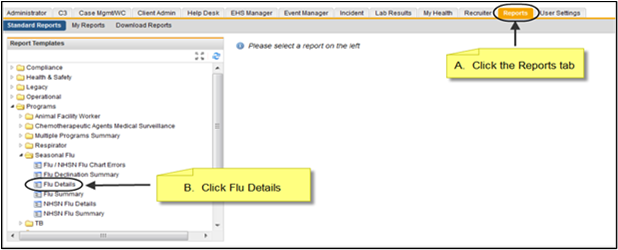
Step #3
You can Customize your Report Name.
The Flu Details window allows you to select Flu Program, Selection criteria AND the Columns output for the report. The only selection criteria required fields are as noted by the red *.
Flu Season – defaults to current flu season years
Program Type – choose Mandatory or Non-Mandatory
Use the Selection Criteria to customize your search criteria. When selecting/deselecting multiple items in the drop downs, click on each item that you want to add or remove, then click outside of the drop down box.
Select the Columns to display on your report.
Click Run Now at the bottom of the dialog box.
Click OK to the "Your report has been created" message.
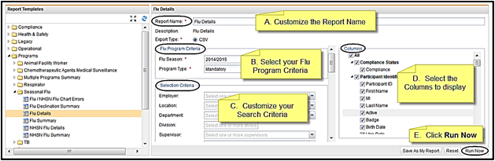
Step #4: Download Reports
To view your report, click Download Reports. You can View Details, View Report or Share your report.
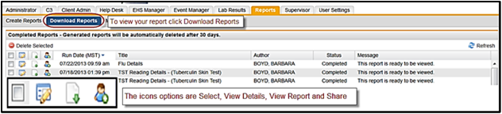
Click the View Detail icon. Depending on what operating system you are using, you may see a dialog box explaining that this report is a Microsoft Excel Comma Separated Values file. The "Open with Microsoft Excel (default)" option will be selected. Click OK at the bottom of the dialog box.
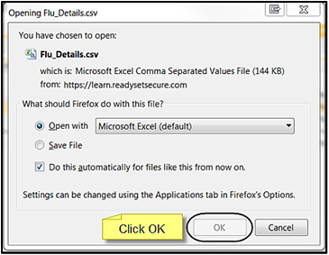
When the report is finished processing, it will display in Microsoft Excel. There are many different ways of formatting the view and we will give you a couple of quick easy steps, later in the document.
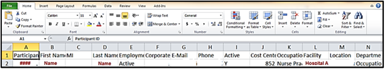
Here is a highlight of the report categories and the data headers that can display in your report if you selected them.
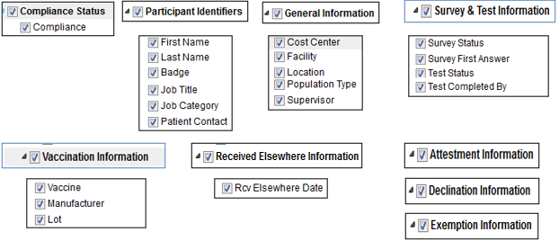
Step #5: Using Simple Excel Commands
To better view the report there are a couple of steps to perform.
To freeze the header row, highlight Row 1.
Click the View tab and then click on the Freeze Panes drop down and select Freeze Top Row. This will keep the header row always visible at the top of the page.
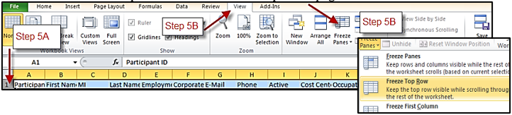
To AutoFit all columns highlight the entire worksheet by clicking on the upper left-hand box (above Row1 and left of column A.)
Click on Home and then the Format drop down. Select AutoFit Column Width.
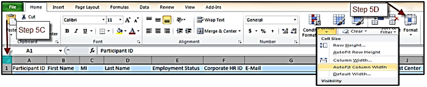
Step #6
You may want to "Hide" columns for easier report reading or to remove HIPAA information. Select the columns you want to "Hide" and then right click on column and click "Hide".
To add Filters to the report, highlight the entire worksheet and then click on Home. Then Sort/Filter drop down.
Click Filters to turn on.
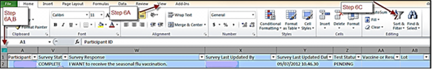
Step #7: View all Date by Survey Status
To view all data by Surveys Status using Filters:
Click on the Filter drop down on Survey Status and select the Pending option. The data will immediately change to only show those employees that have Surveys pending. It will also display the number of pending out of the total records in the report.
Click on the same Survey Status filter and select only Completed. This will display all completed Employee Surveys.
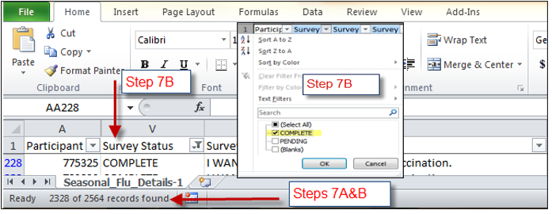
Step #8: View All Data by Test Status
To view all data by Test Status:
To see all Tests Status with completed Surveys, leave the Survey Status filter to "Complete".
Set the Test Status filter to either "All", "Pending", "Rescheduled" or "Complete". The data will immediately display the requested information with the total numbers.
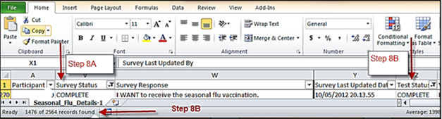
Step #9: Creating Simple PivotTable
A PivotTable counts data, making it easier to manage. Best of all, you can quickly and easily change the PivotTable to see the data in a different way, making it an extremely powerful tool.
NOTE: Microsoft Excel version 2007 will give you an error: (Data source is not valid.) Save the worksheet to your desktop before doing PivotTables.
Highlight the worksheet and clear all Filters. Then click on the Insert tab.
Click on the PivotTable icon.
This will open a Create PivotTable.
Select a table or range is already populated correctly.
Choose where you want the PivotTable report to be placed it will default to New Worksheet. Click OK.
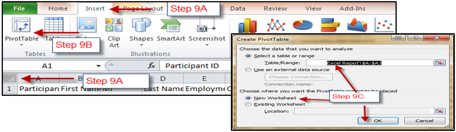
This will open a new worksheet with a PivotTable Field list on the right side of the screen, depending on the version of Microsoft Excel.
Decide what you want for the rows, i.e. location, department. Click and drag "Location" from Choose fields to add to report: to Row Labels. It immediately displays that information to the worksheet.
Decide what you want for the columns, i.e. Test Status, Rcvd Elsewhere. Click and drag "Test Status" from Choose fields to add to report: to Column Labels. It immediately displays that information to the worksheet.
Click and drag "Test Status" again from Choose fields to add to report: to the Values box. This will give you your Grand Total. NOTICE: Your report is already finished!
To remove an item from one of the boxes, click and drag it into the worksheet. It will disappear.
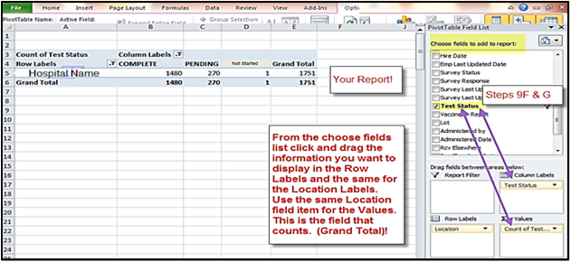
Listed below are some suggested PivotTable reports.
Report
Row Labels
Column Labels
Values
Count of Survey Status
Location
Survey Status
Survey Status
Count of Survey Responses
Survey Response
Survey Status
Survey Status
Count of Test Status
Location
Test Status
Test Status
Step #10: Report Grid
The table below is a quick guide to help you understand your report. Keep in mind on whether your facility is Non-Mandatory, Blended or Mandatory for reporting. The table compares the Survey Status to the Test Status, what the comparison means and then what to do, if anything.
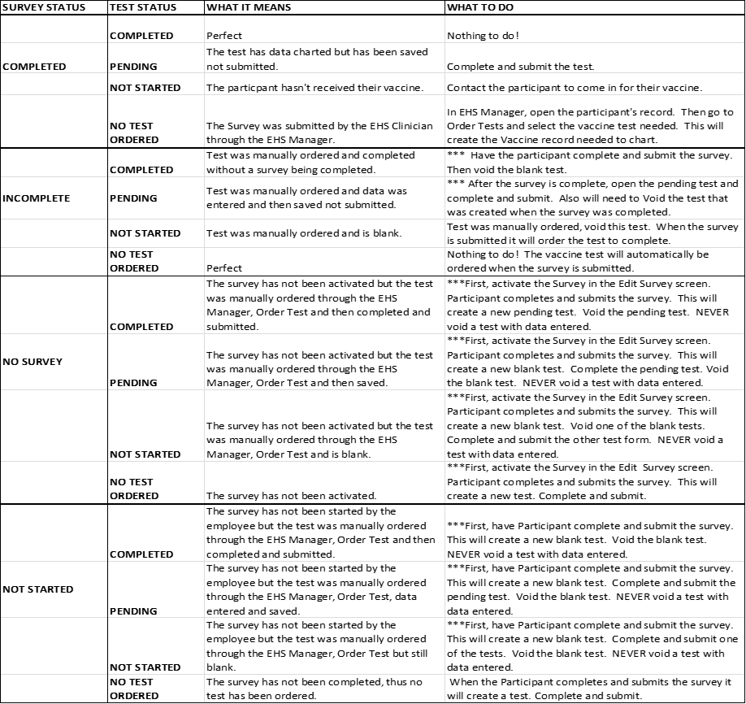
To void a test:
Select desired participant.
Click Edit Appointments in the left menu.
Select the correct appointment date by clicking, this will display all charting forms/tests associated with that appointment.
Select the checkbox beside the tests to be voided.
Note If the Status is COMPLETE, do not void the test as it contains data entered by provider. Only void tests that are in READY status.
Click Modify Status.
Click the Status drop down and select "Void".
Click the Reason drop down and select your reason.
Click Update. The test will still be there, but the status is now void.
Step #11: Additional Reports
You can also use these two additional reports to either summarize for reporting and to determine discrepancies in reporting:
Flu Summary
Flu/NHSN Flu Chart Errors
We will run the Flu Summary first:
The Flu Summary screen displays allow you to select the criteria for creating the report. The only required fields are as noted by the red *.
Flu Season – Current Flu Season
Program Type – Mandatory or Non-Mandatory
When selecting/deselecting multiple items in the drop downs, click on each item that you want to add or remove, then click outside of the drop-down box.
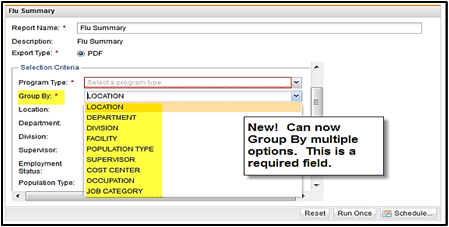
After entering your criteria, click Run Now at the bottom of the dialog box.
The report runs as a PDF.
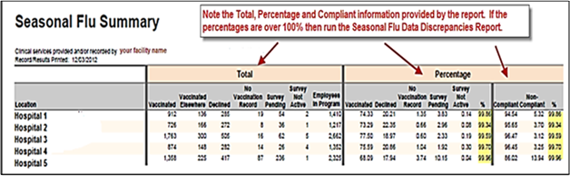
Step #12: Flu/NHSN Flu Chart Errors
If you have a percentage that displays over 100%, running the Flu/NHSN Flu Chart Errors report will provide information for an employee with more than one status.
The Flu/NHSN Flu Chart Errors screen displays allowing you to select the criteria for creating the report. The only required fields are as noted by the red *.
Flu Season
Program Type – Mandatory or Non-Mandatory
Use NHSN Logic – If select "Y" then the report will use NHSN logic. This is not a required field, but it is important.
When selecting/deselecting multiple items in the drop downs, click on each item that you want to add or remove, then click outside of the drop down box.
After entering your criteria, click Run Now at the bottom of the dialog box.
This report runs as a PDF.
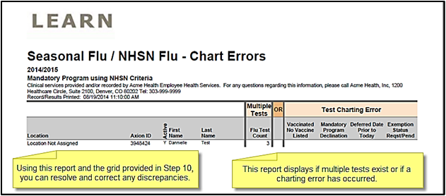
Using this report and the grid provided in Step 10, you can resolve and correct any discrepancies.
Column 1 = Location (can display multiple)
Column 2 = Axion ID (Employee Axion ID)
Column 3 = Active
Column 4 = First Name
Column 5 = Last Name
Column 6 = More than 1 Test
Column 7 = Charting Errors (No Vaccine Listed, Declined vaccine on a Mandatory program, Deferred Date prior to Today, Exemption Status Requested or Pending
Keep in mind whether your facility is Non-Mandatory, Blended or Mandatory for reporting. Refer to the table above (in Step 10) to help you understand your report. The table compares the Survey Status to the Test Status, what the comparison means and then what to do, if anything.